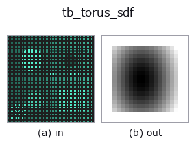

typed op• Data kinds: points → volume
• Call: fullseye.apply(img, "tb_torus_sdf", a=0.5, b=0.5) (the 2-D model is one image plus two scalar knobs a,b∈[0,1])

*The figure is the actual output on a synthetic 128×128 input. Left: input, right: output. Point clouds are drawn as a top-down scatter (brightness = z), 1-D series as a line plot, volumes as the maximum-intensity projection along z, videos as the middle frame, complex images as magnitude; return values that are not pictures are shown as the values themselves.*
*Knob a does not change the output (measured: identical at 0.1 / 0.5 / 0.9).*
*Knob b does not change the output (measured: identical at 0.1 / 0.5 / 0.9).*
Stages (the ops that come before → this op, left to right):
▸ tb_torus_sdf: stages (docs site)
On other images (synthetic scene / photo / coins. Top row: inputs, bottom row: their outputs. Knobs at default):
▸ tb_torus_sdf: other inputs (docs site)
Motion (GIF: frames / views / slices in turn. The still figure is the complete one; the GIF is supplementary):
> This operator's description has not been translated yet. The original text follows as it is.
トーラス(ドーナツ)の厳密な符号付き距離場(内側負・外側正)。
`sdf(p) = ‖(r - major_radius, t)‖ - minor_radius(r は軸からの半径、t` は
軸方向の距離)。芯線が半径 `major_radius の円で、その周りに半径 minor_radius`
の管が付いた形なので、フィレット(隅の丸み)の解析形としてそのまま使える。
引数と検証(`ValueError`):
• `grid / center / axis: :func:cylinder_sdf` と同じ(軸はドーナツの穴の向き)。
• `major_radius`: 芯線の半径(負は拒否)。
• `minor_radius: 管の半径(負は拒否)。minor_radius >= major_radius` だと穴が
潰れた形になるが、距離場としては正しいので拒否しない。
返り値: `grid.shape[:-1]` の float64。
使いどころ: `sdf_subtract で内隅にフィレットを削り出す / sdf_union` で O リング溝の
形を作る。角を丸めるだけなら `sdf_smooth_union` のほうが手軽だが、あちらは丸みの
半径が形状に依存する —— 半径を設計値として持ちたいときはこちら。
2-D 進化レジストリへ橋渡しした 3d の op `torus_sdf。実装は同じで、呼び出し規約だけ op(v, a, b) に合わせてある。この op に調整点は無く、a も b` も使われない。
• Sample-data catalog (download URLs / licences) — 2-D uses skimage.data (BSD/public domain) plus synthetic images; 3-D lists download URLs for real data sources (Stanford, PDS, …).
• Operator provenance and references — the sources of the research/methods this op family came from.
The program below has been verified to run (same input as the figure). In Studio's help this block becomes buttons that load and run it on the spot.
img_to_points 0.50 0.50 tb_torus_sdf 0.50 0.50
▸ Load this pipeline · Load & run
The examples below call the underlying ledger op torus_sdf. This bridge op is the same implementation adapted to the fn(v, a, b) convention, so the behaviour carries over unchanged (only the call form differs).
• sdf_csg — py -3.11 examples_3d/sdf_csg.py
volume as input)identity · vol_gaussian · vol_median · vol_erode · vol_dilate · vol_threshold · vol_reg_dilate · vol_reg_erode
typed)tb_points_to_voxel · tb_estimate_point_normals · tb_iss_keypoints · tb_project_points · tb_render_point_depth · tb_statistical_outlier_removal · tb_radius_outlier_removal · tb_voxel_grid_downsample
*Provenance: ops.py — 2D operator registry. This per-op note is generated by tools/opdocs.py md (do not hand-edit).*
© 2026 Kazufumi Furuse — Fullseye operator documentation. Licensed under Apache-2.0.
{kind=link}
{kind=link}